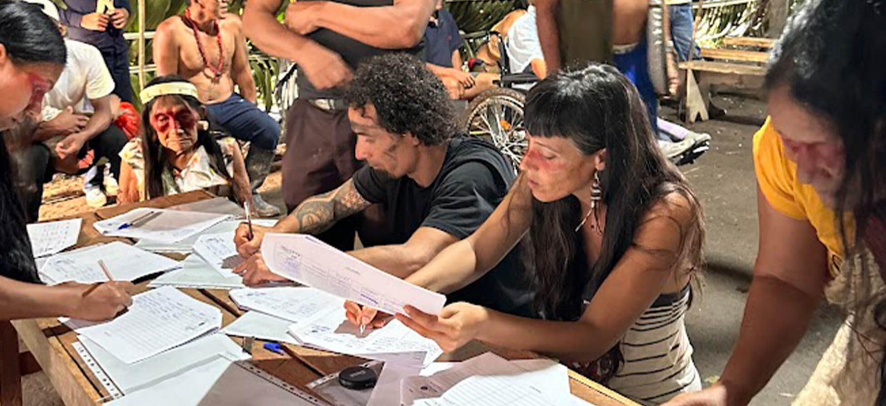
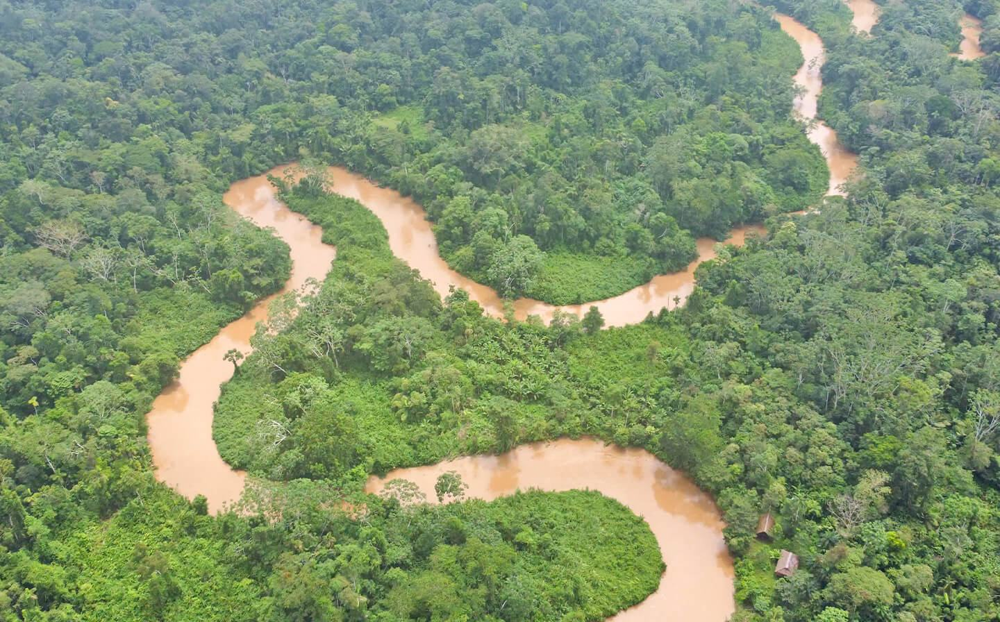
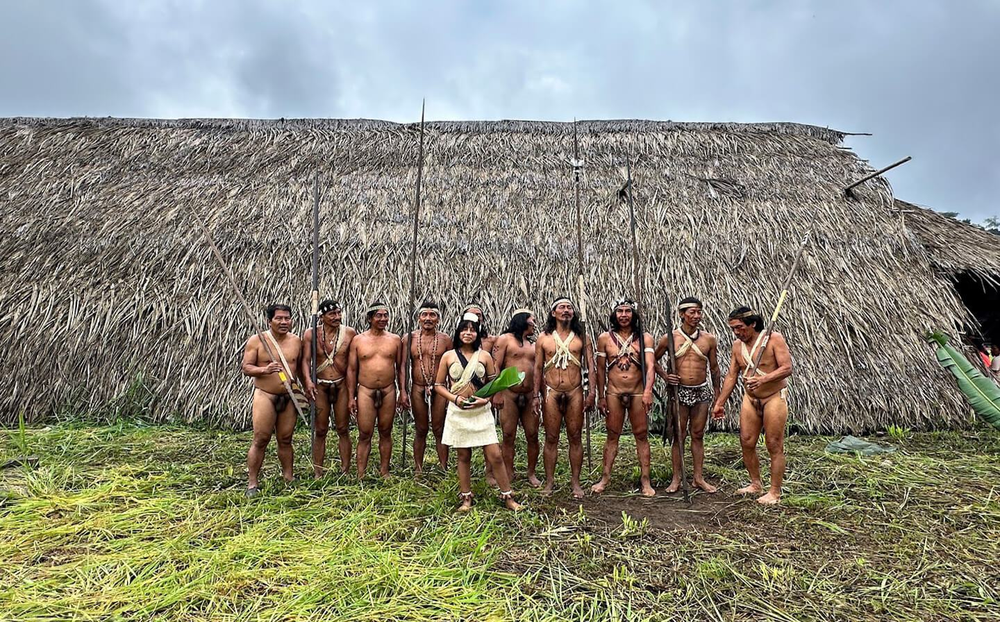

Universidades y docentes
Trae un curso o un grupo de tesistas a un caso real.

Prototipo académico, no oficial
La Asociación Keweriono decide qué necesita. EWAO lo convierte en una tarea clara. Tú aportas tu capacidad a distancia, y el resultado vuelve al territorio.
9 de las 16 comunidades del Modelo EWAO ya están conectadas con Starlink y energía solar.
Ninguna necesidad se publica sin pasar por el nivel de decisión que le corresponde.
Cualquier persona de las comunidades puede proponer una necesidad, incluso de forma anónima, desde el buzón del punto de conexión de su comunidad. Buzón comunitario

Fichas piloto en las áreas que EWAO priorizó para empezar.
No hay fichas con esa capacidad.

Trae un curso o un grupo de tesistas a un caso real.
Aplica tu experiencia a una necesidad concreta.
Se aceptan antes de empezar y cambian según el nivel de información de cada ficha.
Una colaboración se cierra solo cuando el resultado vuelve en un formato que la comunidad puede usar.
Toma unos 4 minutos.